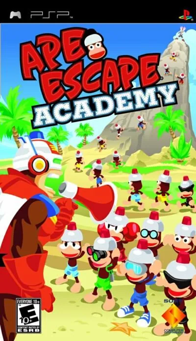
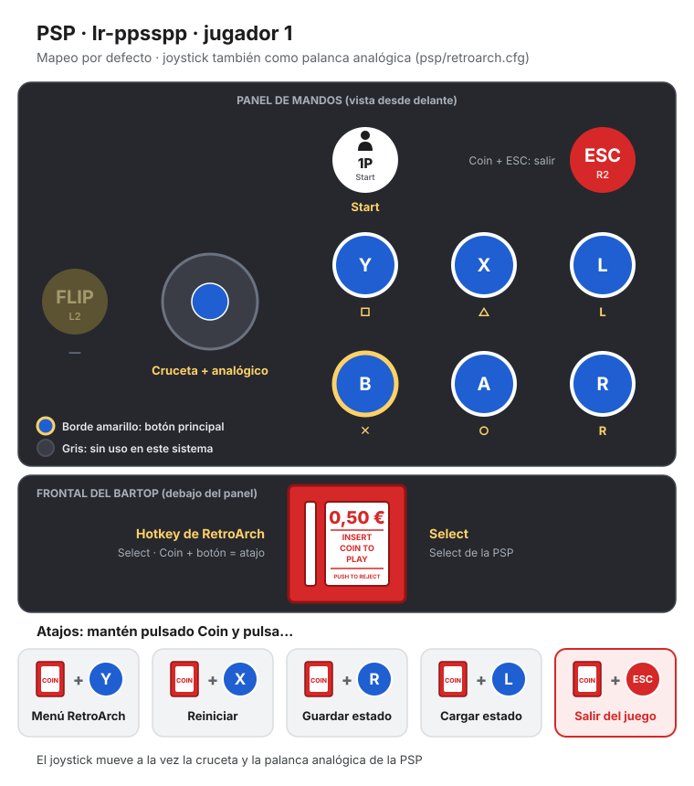
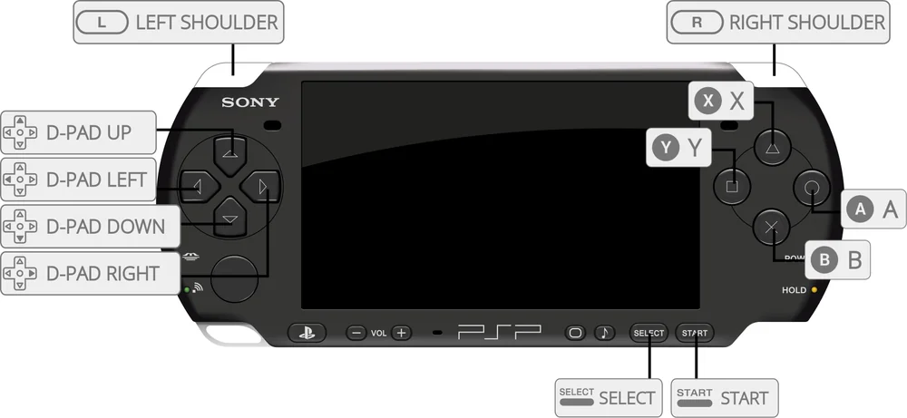

PSP
Ape Academy
- Año: 2005
- Desarrollador: Alvion Co., Ltd
- Género: Puzle
En Ape Escape Academy eres uno de los monos traviesos de la saga Ape Escape. Elige tu mono y prepárate para las clases del modo Academia. Cada «clase» es en realidad un minijuego. El objetivo es completar todos los minijuegos posibles de una cuadrícula de 9x9 y hacer el máximo de líneas (un poco como en las tres en raya). Hay minijuegos de todo tipo, desde preguntas que exprimen el cerebro hasta deportes disparatados o tonterías sin más, como proteger un plátano asado de los monos que se acercan o volar repartiendo paracaídas a primates en caída libre.
Los minijuegos que se desbloquean en el modo Academia se pueden jugar en la «Colección de minijuegos», donde se elige el que se quiera y se practica todo lo que se quiera. Algunos minijuegos tienen estatuas escondidas; al cogerlas se desbloquean más perfiles de monos en la vitrina. Por último, también se puede jugar a Ape Escape Academy contra hasta tres amigos para ver quién es el mejor.
Controles
que el mono se mueva con el joystick y que los botones respondan en los minijuegos (cada uno usa los suyos; el juego empieza con un entrenamiento de botones que sirve de prueba). ¿Va fluido?
Mando de PSP. El joystick mueve la cruceta y también la palanca analógica, porque muchos juegos de PSP solo se mueven con ella.
| Panel | Juego |
|---|---|
 | ✕ |
 | ○ |
 | R |
 | □ |
 | △ |
 | L |
 | Start |
 | Select |
+  | Salir del juego |
El panel en PSP




Argumento
Recopilado de internet (2026-11-04). Lo marcado con ⚠️ no está probado en la bartop.
No tiene una historia propiamente dicha. El jugador es uno de los monos de la saga Ape Escape, que trabaja para Specter, el mono malvado de la serie, y tiene que ir subiendo de curso en su «academia» superando pruebas: de primero de júnior a los cursos de sénior, hasta el examen final.
Fuentes
Jugabilidad
Recopilado de internet (2026-11-04). Lo marcado con ⚠️ no está probado en la bartop.
- Estructura: una colección de 47 minijuegos, muchos sacados de Ape Escape 2. En el modo Academia se va pasando de curso (ver «Guía de niveles»).
- Las clases son una cuadrícula: cada curso tiene 9 minijuegos colocados como en unas tres en raya. Superar el objetivo de un minijuego da un círculo (O) y fallarlo, una cruz (X). Para aprobar el curso hay que hacer un número de líneas de tres círculos (en horizontal, vertical o diagonal).
- Repaso: si te quedas cerca, el juego te da clases de repaso con los minijuegos que fallaste.
- Colección de minijuegos: los que se desbloquean en la Academia se pueden jugar sueltos.
- Controles de cada minijuego: cambian en cada uno y el juego no siempre los explica bien (es la queja de muchas reseñas).
- Multijugador: hasta cuatro jugadores en la PSP original.
Botones según las guías (⚠️ por confirmar)
- ⚠️ No he encontrado una tabla de controles: cada minijuego usa los botones a su manera. El vídeo de «Vídeos» empieza con el entrenamiento de botones del propio juego.
Fuentes
Guía de niveles
Recopilado de internet (2026-11-04). Lo marcado con ⚠️ no está probado en la bartop.
| Tramo | Cursos |
|---|---|
| Entrenamiento | Entrenamiento de botones · entrenamiento duro |
| Júnior | 1.º de júnior · 2.º de júnior |
| Sénior | 1.º de sénior · 2.º de sénior · 3.º de sénior |
| Final | Notas de graduación · examen final |
- Cada curso: 9 minijuegos en cuadrícula y un número de líneas para aprobar.
- Nombres de los tramos: los de los capítulos del vídeo.
Objetos
Recopilado de internet (2026-11-04). Lo marcado con ⚠️ no está probado en la bartop.
| Objeto | Qué hace |
|---|---|
| (ninguno) | Es una colección de minijuegos: no hay objetos |
Fuentes
Trucos y secretos
Recopilado de internet (2026-11-04). Lo marcado con ⚠️ no está probado en la bartop.
- Superar los minijuegos en la Academia los desbloquea en la colección, para jugarlos cuando quieras.
- ⚠️ No he encontrado trucos de botones. En Japón se llamó Piposaru Academia y en EE. UU. Ape Escape Academy; en Europa, Ape Academy.
Fuentes
Longplay

Partida de la versión americana (Ape Escape Academy) para PSP (68 min), de Braindead Entertainment: Ape Escape Academy PSP Playthrough - Weird Game.
Pulsa el minuto de un nivel para ver el vídeo desde ese punto.